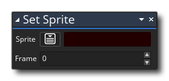

La description
Ce bloc d'action définit le sprite_index de l'instance à un autre sprite de l'arbre des ressources. Vous sélectionnez l'image-objet à modifier, puis donnez l'image (image d'animation) à afficher. Notez que si vous ne souhaitez pas que l'image-objet s'anime après avoir défini le cadre, vous devez utiliser l'action Définir la vitesse d'animation et la définir sur 0, ou si vous souhaitez que l'image-objet continue à animer, définissez la valeur image_index variable variable intégrée à la place.
La modification de l'image-objet modifiera également le masque de collision de l'instance, sauf si vous avez également spécifié une mask_index dans l' éditeur d'objets. Notez que pour que les modifications de cette action soient visibles, l'instance ne doit comporter aucun événement draw (et donc GameMaker Studio 2 dessine l'image-objet par défaut) ou être dessiné à l'aide de Draw Self action.
Syntaxe de l'action:
Arguments:
Argument La description Sprite Le nouveau sprite à utiliser (-1 si vous voulez supprimer le sprite). Frame Le cadre d'animation à afficher initialement (si aucun cadre supplémentaire n'est utilisé, utilisez 0).
Exemple:
Le code de bloc d'action ci-dessus définit un nouveau sprite ainsi qu'un certain nombre d'autres propriétés pour la façon dont ce sprite doit être affiché.